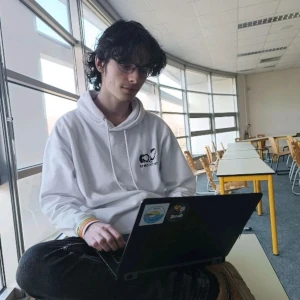

Hi, I'm Simon Renoux
(they/them)The gender pandora box
I am nonbinary and use they/them. I prefer to look androgyne and more on the feminine side.
a student at Polytech Nantes obsessed over Networking.
I also go by fantomitechno online.
If you'd prefer learning about me from my CV, you can find 3 versions: French versions (Light, Dark) and an English version (Dark)
Studies
I am a 21-year-old French student at Polytech Nantes. I am in my 5th year of a Computer Science engineering degree. Not only that, but I am following options related to networking, and I am part of my school Networking club, the Club Rezo.
Computer networking
I am obsessed with networking.
In our school club we are hosting a LAN party for an entire weekend,
known as the Nantarena,
I am the network administrator for this event.
On the side of school, I am also a member of FAImaison, an associative ISP,
and run my own homelab.
Homelabing
Since September 2025, I run a raspberry pi with multiple websites and services. In September 2026, I will set up
a bigger homelab with 2 servers (named fant0mib0t and Conseil), a router
(OpnSense-DeLoreane), a switch (SG500X-Argo3) and an AP. Plan is to be fully out of my
ISP, in the end moving to use a fiber connection provided by FAImaison. You can follow whatever I am doing with
my homelab on LeafLet
and if you want to take a look at the
already existing configuration, check my
dotfiles.
All servers will run on NixOS and the router will use OpnSense.
Development
With school and personal projects, I learned multiple programming languages:
- JavaScript & TypeScript
- Python
- Java
- Go
- C#
- C & C++
Modding
I also do some game modding and servers management with Celeste and Minecraft.
I was part of the team behind the community Minecraft servers for MathoX, where I built mods modifying the server's logic. One of my best projects for this was a server mod to link our bingo minigame to a website to follow the game in real time, it was made in collaboration with nalo_. I also worked on public Minecraft mods that you can find on my Modrinth profile
On the Celeste side, I created a mod linking Celeste and Minecraft, known as The Golden Challange, it is no longer working as I was not planning to pay for the Minecraft server for more than a month, but you can find a video of a Celeste streamer playing it. (it broke at the end because I messed up a single line of C#...) I also created a map using unusual controls (your microphone and your scroll wheel), you can also find a video by the same streamer. (I chose to showcase this video because it is way too funny over the other clears) You can find my other Celeste mods on my GameBanana profile . I also work with CelesteNet to work on my own server and host it in the end.
Other occupations
On YouTube, I am an editor for Parrot Dash and I worked on the Celeste Recap. I also play Celeste, Hollow Knight and Hollow Knight: Silksong casually, and very rarely I still play Minecraft.